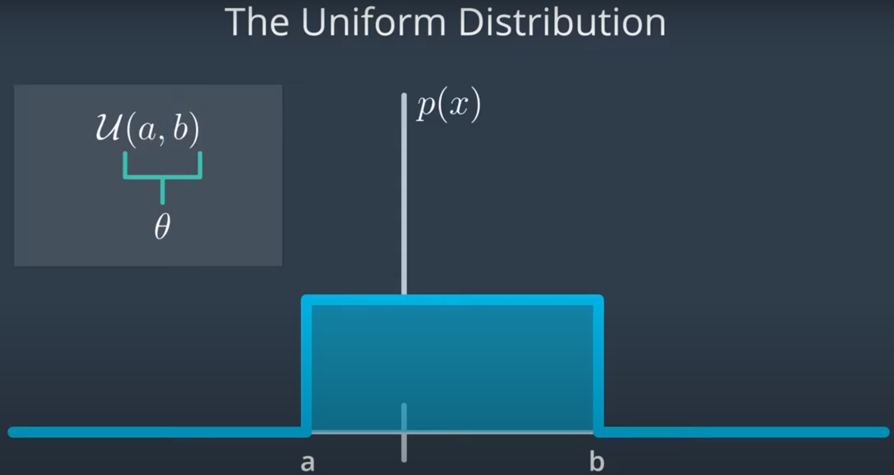
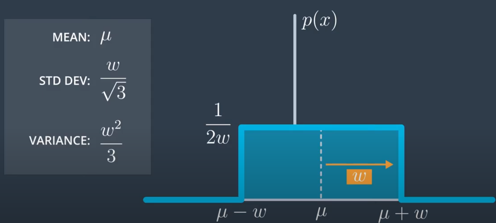
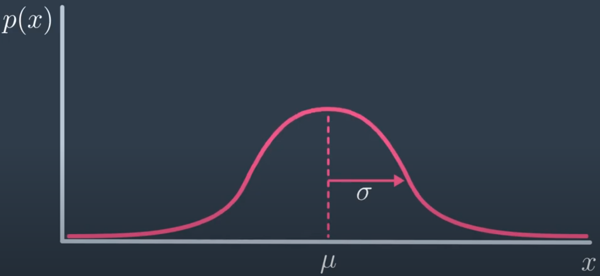
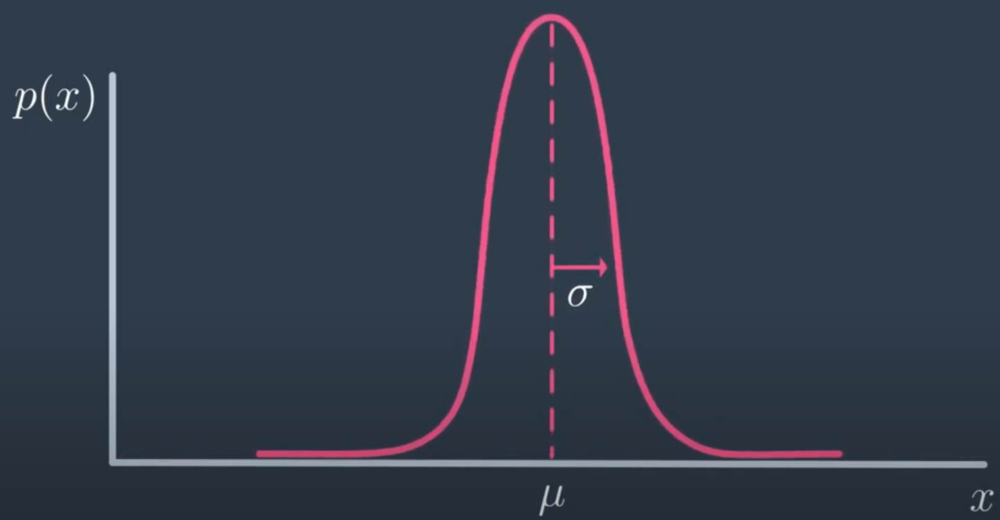

A uniform distribution can be parameterised in 2 ways:
Using $a$ and $b$ bounds

Using mean $\mu$ and width $w$

The ends are $\mu - w$ and $\mu + w$. The height of the distribution is $\frac{1}{2w}$, making the area, i.e. the probability of values within the interval, equal to $1$
This distribution says all possible outcomes are equally likely, and sometimes this assumption needs to be made when the parameters of the distribution $p(x)$ are not known.
Drawing samples from a uniform distribution means randomly selecting values from a continuous range of values with an equal probability of selecting any value within that range. The probability density function of a uniform distribution is a constant, and the probability of selecting any given value within the range is the same.
Gaussian or normal distribution
Probability density function

Wide gaussian

Thin gaussian
A gaussian is a bell shaped curve, centered at some mean $\mu$, with some width given by the standard deviation $\sigma$. The density function is:
$$
p(x) = \frac{1}{\sqrt{2\pi \sigma^2}} e^{\frac{-(x-\mu)^2}{2\sigma^2}}
$$
Properties
It's symmetric around the mean
The probability that $x$ is within $\pm 1\sigma$ is $68\%$ and within $\pm 3\sigma$ is $99.7\%$
Standard deviation
$\sigma$ describes how wide a distribution is.
A small $\sigma$ will make the peak narrow and sharp
Implying a high confidence of predicting what a sample drawn from
$x$ will be.
A large $\sigma$ will make the normal distribution very wide and flat
Implying a poor knowledge of what exactly any given sample from the distribution will be.